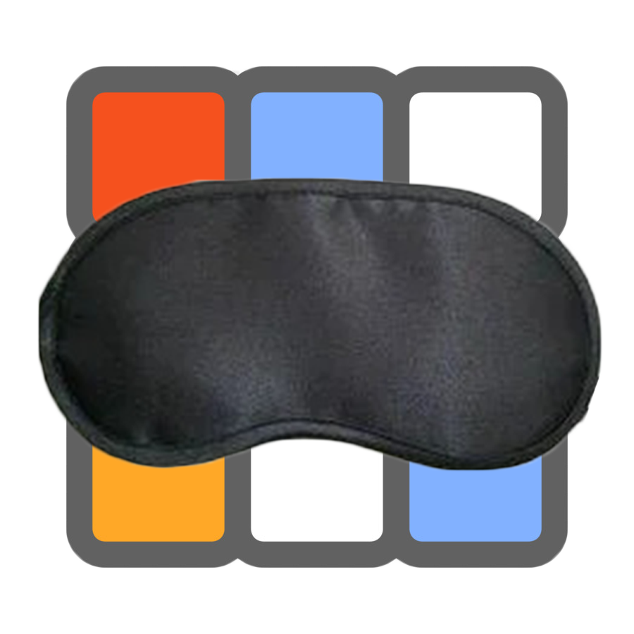

Как собрать кубик Рубика?
Лучшие методики сборки головоломок
Узоры на кубике
Если вам надоели обычные сборки и вы хотите изучить что-то новое, предлагаем вам по экперементировать с красивыми и необычными узорами на кубике Рубика
Метод Джессики Фридрих
Алгоритмы F2L
Алгоритмы OLL
Алгоритмы PLL

Сборка вслепую
После того как вы научились собирать 3x3, советуем вам научиться сборки в слепую для учучшения координации и скорости сборки
Одной рукой
Тот же самый метод Джесики Фридрих, только все алгоритмы для данной базы предпочтительны для использования в сборке одной рукой
Как собрать кубик Рубика 3х3 за 1 минуту?
Простая и понятная инструкция для новичков. Научиться собирать кубик Рубика можно всего за один вечер. По данной методике можно достичь результата сборки в 1 минуту.